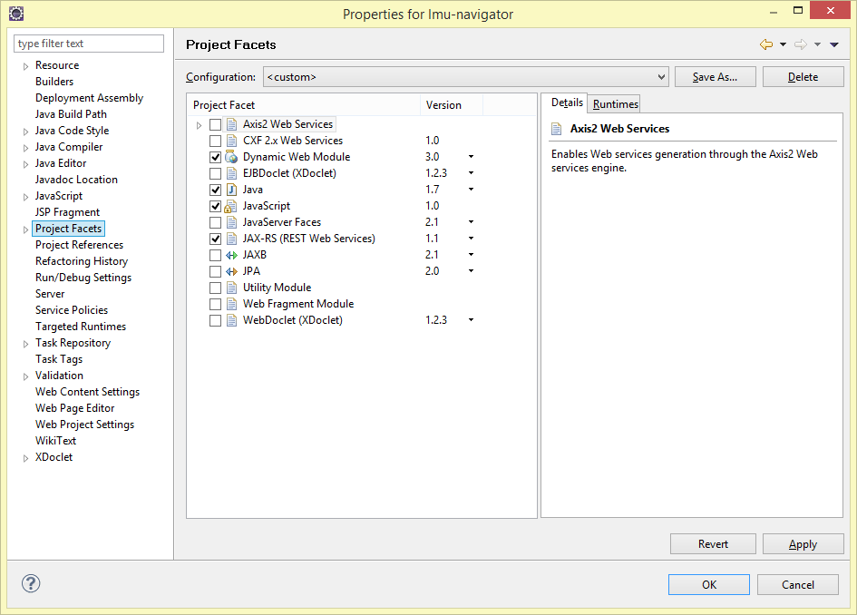
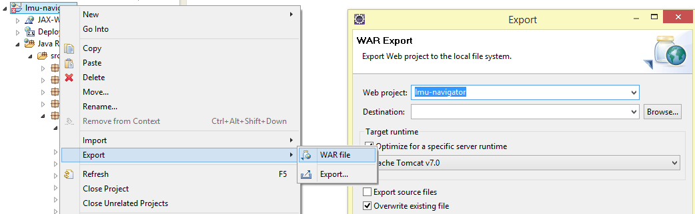

Server Dokumentation
Hier findest Du Informationen zum Server, welcher für die Aufbereitung der Raum- und Gebäudedaten programmiert wurde. Ausgangsbasis für den Server war die Praxisphase aus dem Praktikum Mobile und Verteilte Systeme im Wintersemester 2013/14. Dort haben wir einen RESTful Web Service mit Hilfe von Java, Tomcat, Jersey (JAX-RS) und MySQL aufgesetzt, hier die Folien zur damaligen Übung. Die Lokalisierung und Positionierung erfolgt mittels Textsuche auf den PDF-Gebäudeplänen.
Am besten setzt man eine Instanz des Servers auf der lokalen Entwicklungsumgebung auf. Nähere Infos zur damaligen Entwicklungsumgebung findest Du im nächsten Kapitel.
Die alten Repositories aus dem Praktikum sind noch auf GitLab verfügbar: Wintersemester 2013/14, Sommersemester 2014, und das aktuelle GitHub-Repository. Der Server aus dem Praktikum war über folgende Adresse erreichbar: http://141.84.213.246:8080/lmu-navigator/. Wie lange dieser Server noch verfügbar bleibt, ist jedoch ungewiss.
Übersicht:
- Installation
- Architektur (Struktur des Servers)
- REST API
- Deployment
- Future Work
Installation
Installation der Arbeitsumgebung, welche von 2013 bis Anfang 2015 verwendet wurde.
- Tomcat
- MySQL
- Apache
- Eclipse
Tomcat
- Tomcat Version: 7.0.42.0
- JVM Version: 1.7.0_21-b11
- OS Name: Windows 8, Version: 6.2, Architecture: amd64
MySQL
Beim MySQL Server (Version 5.0.11) wurden keine individuellen Anpassungen vorgenommen. Wir haben lokal mit der MySQL-Instanz gearbeitet, welche mit XAMPP mitgeliefert wurde.
Als Administrationsoberfläche haben wir PhpMyAdmin verwendet, welches ebenfalls mit XAMPP mitgeliefert wird.
Apache
Apache haben wir für PhpMyAdmin und zum Hosten von allen statischen Dateien (über Port 80) verwendet, da ein Tomcat Servlet mit mehreren 100 MB auf Windows zu Problemen und Abstürzen führt.
XAMPP
Die Installation von XAMPP ist optional. Sie erleichtert vor allem bei Windows Geräten die Installation von Apache, PHP, MySQL und PhpMyAdmin.
Eclipse
Eclipse Java EE IDE for Web Developers
(Juno Service Release 2, Build id: 20130225-0426)
)
Benötigte Plugins: Eclipse Web Tools Platform
Import des Projektes
-
GitHub Repo klonen
-
Eclipse installieren (Version siehe oben)
-
Projekt importieren (General > Existing Projects into Workspace > Projekt hinzufügen)
Konfiguration von Eclipse
Sollte es zu Problemen bei dem Ausführen des Servlets kommen, kann es daran liegen, dass Eclipse das Projekt noch nicht als Dynamic Web Project erkennt. Hierfür müssen u.a. folgende Projekt-Einstellungen vorgenommen sein:
-
Java Version 1.6, da auf dem Praktikums-Server nur Java 1.6 installiert ist.

-
Sicherstellen, dass die Facets Dynamic Web Module und JAXB ausgewählt sind.
 -
Und hier noch eine Übersicht der verwendeten JARs

-
Sicherstellen, dass Tomcat auch als Runtime Environment zu Eclipse hinzugefügt wurde.
Architektur
- Erklärung des Datenmodells
- Erklärung der Module
- Wie die Module und Klassen zusammenhängen
- Wie man auf den Server zugreifen kann
Modell
Das Modell ist im Package de.lmu.navigator.server.model abgelegt. Für uns wichtig sind folgende Klassen: (mit Mapping von unserem Datenmodell zu den CSV-Dateien von der LMU)
City.java <-> 01_Stadt.csv
Street.java <-> 02_Strasse.csv
Building.java <-> 03_Bauwerk.csv
BuildingPart.java <-> 04_BauteilHaus.csv
Floor.java <-> 05_Geschoss.csv
Room.java <-> 06_Raum.csv
Zwischen den jeweiligen Modell-Hierarchien besteht eine 1-zu-N-Beziehung (von City zu Street, von Street zu Building, usw).
Packages
Der Java Tomcat-Server besteht aus folgenden fünf Packages:
de.lmu.navigator.server (REST API / Jersey)
de.lmu.navigator.server.data (Logik für Raumpositionierung)
de.lmu.navigator.server.database (MySQL Integration)
de.lmu.navigator.server.model (Datenmodell)
de.lmu.navigator.server.upload (CSV Importer)
Modell-Package
Das gerade beschriebene Datenmodell liegt im Package de.lmu.navigator.server.model vor. Dort liegen neben den oben beschriebenen Objekttypen noch ein paar weitere Klassen bereit:
Settings.java (Pfade wo PNGs/PDFs im Dateisystem liegen)
Version.java (Fortlaufende Numerierung für Versionskontrolle)
Zum Zeitpunkt des Praktikums haben wir auch noch Wegegraphen für das Indoor-Routing gespeichert, welcher in der aktuellen Version der App und des Servers gestrichen wurde. Für diesen Wegegraphen hatten wir folgende Klassen angelegt:
RoutingNode.java (Knoten)
RoutingEdge.java (Kante)
RoutingFloorConnection.java (Verbindet stockwerkübergreifend Knoten)
RoutingRoomConnection.java (Verbindet Räume mit Knoten)
Hauptmodul
Das Hauptmodul de.lmu.navigator.server definiert die REST API und stellt somit den Entry Point für die Server-Anwendung dar. Umgesetzt wurde dieser Teil mit der Java API for RESTful Services (JAX-RS) (Package javax.ws.rs). Für nähere Informationen zu Jersey (JAX-RS) siehe: https://jersey.java.net/documentation/latest/index.html
Das Mapping von REST URI zu den Getter und Setter Funktionen funktioniert recht intuitiv über Annotationen direkt im Code. An der Klasse selbst legt man fest, welches
@Path("/rooms")
public class Rooms {
@GET
@Produces("application/json")
public ArrayList<Room> getRoomsByRange(
@DefaultValue("") @QueryParam("code") String roomCode,
@DefaultValue("") @QueryParam("floor") String floorCode)
throws Exception {
...
}
}
Für die Klassen Floor bis City ist der Aufbau analog.
Als Datenbank-Anbindung haben wir jeweils die Klassen CityMySQL - RoomMySQL angelegt.
Datenbank
Als Datenbank haben wir uns für MySQL und als Administrationsoberfläche für PhpMyAdmin entschieden, da hierfür zum Zeitpunkt des Praktikums die meisten Vorkenntnisse vorhanden waren. Die Architektur der Datenbank ist angelehnt an die Struktur der CSV-Dateien, welche wir für den Import vom Referat IV.1 der LMU München bekommen.
Ein vollständiger MySQL-Dump der Datenbank kann im privaten GitHub-Repository gefunden werden (Zugriff auf Anfrage). Aus Datenschutzgründen dürfen wir die CSV-Dateien und den MySQL Dump nur in einem privaten Repository hosten.
Hier ein Auszug aus der mysql-init.sql Datei, um ein besseres Verständnis dafür zu bekommen wie die Daten zusammenhängen (Stand Februar 2015).
CREATE TABLE IF NOT EXISTS `1_city` (
`id` int(11) NOT NULL AUTO_INCREMENT,
`Code` text NOT NULL,
`Name` text NOT NULL,
PRIMARY KEY (`id`)
) ENGINE=InnoDB DEFAULT CHARSET=utf8;
CREATE TABLE IF NOT EXISTS `2_street` (
`id` int(11) NOT NULL AUTO_INCREMENT,
`Code` text NOT NULL,
`CityCode` text NOT NULL,
`Name` text NOT NULL,
PRIMARY KEY (`id`)
) ENGINE=InnoDB DEFAULT CHARSET=utf8;
CREATE TABLE IF NOT EXISTS `3_building` (
`id` int(11) NOT NULL AUTO_INCREMENT,
`Code` text NOT NULL,
`StreetCode` text NOT NULL,
`DisplayName` text NOT NULL,
PRIMARY KEY (`id`)
) ENGINE=InnoDB DEFAULT CHARSET=utf8;
CREATE TABLE IF NOT EXISTS `3_building_position` (
`Code` varchar(16) NOT NULL,
`CoordLat` double DEFAULT NULL,
`CoordLong` double DEFAULT NULL,
KEY `Code` (`Code`)
) ENGINE=InnoDB DEFAULT CHARSET=utf8;
CREATE TABLE IF NOT EXISTS `4_building_part` (
`id` int(11) NOT NULL AUTO_INCREMENT,
`Code` text NOT NULL,
`BuildingCode` text NOT NULL,
`Address` text NOT NULL,
`hidden` int(1) NOT NULL DEFAULT '0',
PRIMARY KEY (`id`)
) ENGINE=InnoDB DEFAULT CHARSET=utf8;
CREATE TABLE IF NOT EXISTS `5_floor` (
`id` int(11) NOT NULL AUTO_INCREMENT,
`Code` text NOT NULL,
`BuildingPartCode` text NOT NULL,
`FloorLevel` text NOT NULL,
`Name` text NOT NULL,
`MapUri` text NOT NULL,
`MapSizeX` int(11) NOT NULL,
`MapSizeY` int(11) NOT NULL,
`hidden` int(1) NOT NULL DEFAULT '0',
PRIMARY KEY (`id`)
) ENGINE=InnoDB DEFAULT CHARSET=utf8;
CREATE TABLE IF NOT EXISTS `6_room` (
`id` int(11) NOT NULL AUTO_INCREMENT,
`Code` text NOT NULL,
`Name` text NOT NULL,
`FloorCode` text NOT NULL,
`PosX` double NOT NULL,
`PosY` double NOT NULL,
`hidden` int(1) NOT NULL DEFAULT '0',
PRIMARY KEY (`id`)
) ENGINE=InnoDB DEFAULT CHARSET=utf8;
REST API
Im folgenden wird die REST Schnittstelle des Tomcat Servers beschrieben. Aktuell kann die REST-API für den Server unter folgender Adresse aufgerufen werden: http://localhost:8080/lmu-navigator/rest/
Für den Produktiveinsatz arbeiten wir vorerst mit statischen JSON-Dateien. Zum einen da sich der Datenbestand meist nur einmal pro Semester verändert, zum anderen da wir dadurch auf Server der LMU München zurückgreifen können. Die neu generierten JSON-Dateien werden bei jeder Veränderung (Inkrementierung der Versionsnummer /rest/version) erneut in die App eingelesen. Die Aktualisierung ist einmal pro Semester in Rücksprache mit den Referaten geplant.
Nützliche Links für die Entwicklung:
Statische JSON Dateien
Ursprünglich war angedacht alle für die App relevanten Raum- und Gebäudedaten auf einem StaticServer der LMU zu hosten. Sollte die App mal richtig an Fahrt aufnehmen, wäre dieser Schritt noch überlegenswert. Ansprechpartner für den StaticServer wäre das Referat für Internetdienste.
Für Entwicklungszwecke haben wir vorerst auf das Hosting von github.io zurückgegriffen. Die gleichen Dateien, welche wir später noch auf die LMU-Server auslagern können, sind direkt über folgende URL erreichbar: lmu-navigator.github.io/data/json/
1_city.json
2_street.json
3_building.json
4_building_part.json
5_floor.json
6_room.json
version.json
Hier werden neben den JSON Dateien auch die Gebäudepläne im PNG- & PDF-Format und die Fotos der Gebäude gehosted, siehe den Admin-Guide.
REST Funktionalität des Tomcat Servers
Sofern der Tomcat-Server verwendet wird, steht auch eine REST-Schnittstelle zur Verfügung, über welchen gezielt einzelne Räume, Stockwerke oder Gebäude(teile) angesprochen werden können. Anbei eine kurze Beschreibung der vorhandenen Funktionalität. Alle Requests und Responses benutzen die JSON Syntax.
GET /ping dient zum Testen des Servers und liefert "Pong" zurück, sofern das Tomcat Servlet erfolgreich deployed wurde.
GET /version liefert die Versionsnummer für den aktuellen Stand der Daten.
{"version":7,"timestamp":1409688383}
/cities
GET /cities liefert eine Liste aller Stadtteile mit LMU Gebäuden.
/streets
GET /streets liefert eine Liste aller Straßen mit LMU Gebäuden. Die Liste lässt sich über die GET Parameter ?code={StreetCode} und ?city={CityCode} zusätzlich filtern.
GET /streets/{StreetCode} liefert die über {StreetCode} angeforderte Straße zurück.
/buildings
GET /buildings liefert eine Liste aller LMU-Gebäude zurück. Die Liste lässt sich über die GET Parameter ?building={BuildingCode} und ?street={StreetCode} zusätzlich filtern.
GET /buildings/{BuildingCode} liefert das über {BuildingCode} angeforderte Gebäude zurück.
/buildingparts
GET /buildingparts liefert eine Liste aller LMU-Gebäudeteile. Die Liste lässt sich über die GET Parameter ?buildingpart={BuildingPartCode} und ?building={BuildingCode} zusätzlich filtern.
GET /buildingparts/{BuildingPartCode} liefert das über {BuildingPartCode} angeforderte Gebäudeteil zurück.
/floors
GET /floors liefert eine Liste aller Stockwerke der gesamten LMU zurück. Die Liste lässt sich über die GET Parameter ?code={FloorCode} und ?buildingpart={BuildingPartCode} zusätzlich filtern.
GET /floors/{FloorCode} liefert das über {FloorCode} angeforderte Stockwerk zurück.
GET /floors/{floorCode}/bordering liefert alle benachbarten Stockwerke zurück, welche auf die gleiche PDF-Datei (mapUri) zurückgreifen, sich selbst ausgeschlossen. Diese Funktionalität ist für Gebäude wie das Hauptgebäude notwendig, da dort auf einer PDF mehrere Floors enthalten sind und diese somit rekursiv geladen werden können.
/rooms
GET /rooms liefert eine Liste aller Räume der gesamten LMU zurück. Die Liste lässt sich über die GET Parameter ?code={FloorCode} und ?buildingpart={BuildingPartCode} zusätzlich filtern.
GET /rooms/{RoomCode} liefert den über {RoomCode} angeforderten Raum zurück.
POST /rooms/{RoomCode} ermöglicht das Anlegen eines neuen Raumes in der Datenbank.
Besonderheiten: Es werden nur Räume als JSON ausgegeben, die eine gültige Position haben (PosX != 0 + PosY != 0) und sichtbar sind (hidden == 0). Nicht positionierte und deaktivierte Räume werden somit nicht über die REST-Schnittstelle ausgegeben.
Deployment des Servers
Schritt für Schritt-Anleitung:
-
Zuerst in
de.lmu.navigator.server.database.Database.javadie FlagPRODUCTION_SERVERauftruesetzen, und nach dem Exportieren der WAR file wieder zurück auffalse(=development environment). -
Eclipse-Projekt als WAR-File exportieren
 -
WinSCP starten und am Server einloggen
-
Die WAR-Datei hochladen und nun folgende Kommandos ausführen
sudo rm webapps/lmu-navigator.war
sudo rm webapps/lmu-navigator/ -r
sudo mv lmu-navigator.war webapps/
Der Pfad für webapps variiert von System zu System. Auf dem aktuellen System weist er auf /var/lib/tomcat7/webapps.
Bei Problemen mit Tomcat auf dem Praktikums-Server am besten mal in das GitLab-Wiki schauen.
Room Canvas
Sollte der Positionierungsalgorithmus nicht einwandfrei funktionieren, was bei < 1% der PDFs vorkommt, hat man die Möglichkeit jeden einzelnen Raum über die RoomCanvas-Ansicht manuell zu korrigieren. Was man beachten muss, damit die Positionierung einwandfrei durchgeführt wird, haben wir im GitHub-Wiki zusammengefasst (Zugang auf Anfrage). PDFs mit Schreibschutz, oder nicht durchsuchbarem Text, lassen sich nicht automatisiert positionieren.
Hierfür gibt es die Möglichkeit manuell nachzuhelfen. Der RoomCanvas ist über folgende Adresse erreichbar: http://localhost:8080/lmu-navigator/data/rooms?floor=g650301
Features: Manuelle Raum-Positionierung Deaktivieren von nicht existierenden / nicht sichtbaren Räumen Schnelle Navigation mittels der ESC Taste Right click: Pan * Left click: neue Position auswählen
Future Work
Auf den MEAN-Stack migrieren, Node.js für das Backend verwenden und Angular.js, Ember.js oder Backbone.js für das Frontend.